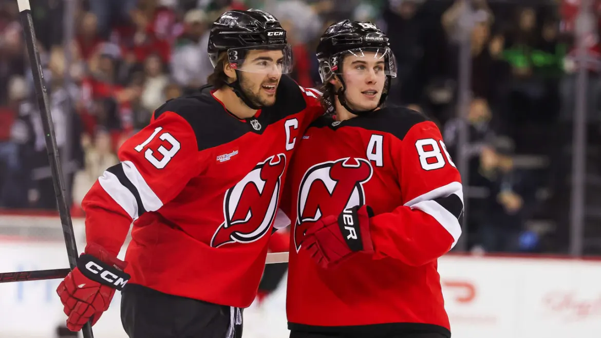
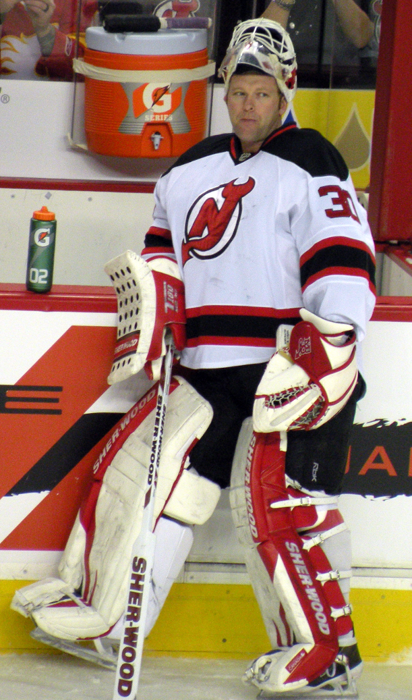

BEM VINDO AO
NEW JERSEY DEVILS
A franquia começou como Kansas City Scouts em 1974, passou por Colorado e finalmente se estabeleceu em New Jersey em 1982. O nome "Devils" é inspirado na lenda folclórica do "Demônio de Jersey", que supostamente habita as florestas do sul do estado.
O time revolucionou a liga nos anos 90 com um sistema defensivo extremamente rígido conhecido como "The Neutral Zone Trap". Essa estratégia, focada em anular o ataque adversário no meio do gelo, levou os Devils a conquistar três títulos da Stanley Cup em menos de uma década.
Atualmente, o time passou por uma reconstrução completa e abandonou a imagem defensiva do passado. Hoje, os Devils são conhecidos por terem um dos elencos mais jovens, velozes e dinâmicos de toda a NHL, focando em um jogo de transição ofensiva muito agressivo.
CONHEÇA OS
JOGADORES

Martin Brodeur
Goleiro
1991-2014
AGENDA
28
29
31
2
4
5